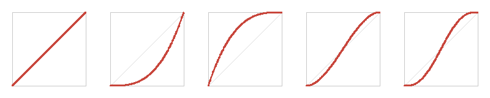
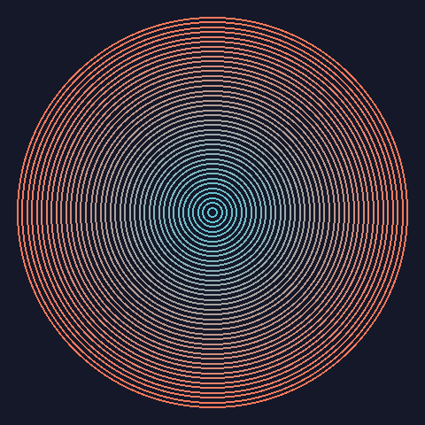
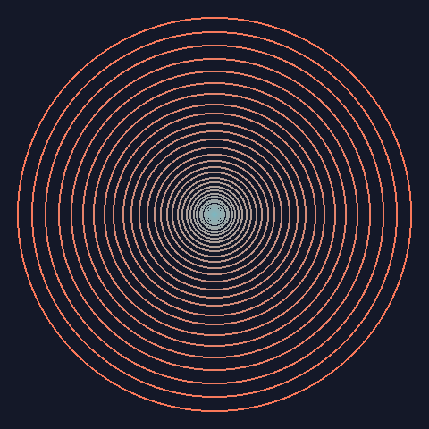
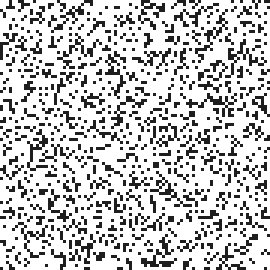
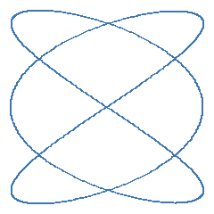

基礎編：ジェネラティブアート特有の設計方針
Python・NumPy・Pillow・matplotlib 自体の使い方には立ち入らず、ジェネラティブアート作品を作る上で共通して必要になる設計上の考え方をまとめる。
座標系の正規化
作品のロジックを 800 x 800 のような特定の解像度に結びつけて書くと、後から出力サイズを変えたくなったときに、拡大縮小や余白の計算をあちこちに書き足す羽目になる。座標を最初から [0, 1] あるいは [-1, 1] のような正規化された範囲で組み立て、実際にピクセル配列や画像へ書き出す最後の段階だけでピクセル座標に変換すると、解像度の変更が「最後の変換関数に渡す width / height を変えるだけ」で済むようになる。
本資料のサンプルコードでは、簡潔さを優先してピクセル座標を直接扱っている箇所も多いが（ノイズを使った表現のノイズ画像など）、複数の解像度で書き出したい作品や、印刷用に大きな解像度が必要になる作品では、正規化座標を採用する価値がある。
1def to_pixel(u: float, v: float, width: int, height: int) -> tuple[int, int]:
2 """正規化座標 (u, v) （それぞれ0〜1）をピクセル座標に変換する。"""
3 x: int = round(u * width)
4 y: int = round(v * height)
5 return x, y
シードと再現性
ジェネラティブアートは乱数を多用するため、シードを固定しない限り実行のたびに違う結果になる。これは狙った効果である一方、「さっき気に入った出力をもう一度得たい」「1 つのパラメータだけを変えて見た目の違いを比較したい」といった場面では、同じシードから同じ乱数列を再現できることが重要になる。実際、本資料のノイズを使った表現の作例でも、make_permutation(seed=...) に固定のシードを渡すことで、生成される画像を再現可能にしている。
np.random.seed のようにグローバルな乱数状態を書き換える方式は、モジュールをまたいで暗黙の状態を共有してしまうため、複数の作品や複数のパーティクル群を同時に扱うコードでは思わぬ干渉が起きやすい。np.random.default_rng(seed) でジェネレータのインスタンスを明示的に作り、それを関数の引数として持ち回す方式のほうが、「このシードでこのジェネレータから生成した」という対応関係がコード上に残り、再現性・独立性の両面で扱いやすい。
1import numpy as np
2
3rng: np.random.Generator = np.random.default_rng(seed=42)
構図とレイヤーの考え方
1 枚の絵を「1 つの決め打ちの手続き」として書くのではなく、「パラメータを受け取って画像（または画像の一部）を返す関数」として設計しておくと、同じコードから多様なバリエーションを生み出せる。本資料の作例でも、ノイズを使った表現の fbm2d / domain_warp2d は座標配列とシード・オクターブ数などのパラメータを受け取り、フラクタルの draw_l_system は axiom・書き換え規則・角度を受け取る、というように、いずれも「描画関数 + パラメータ」の形をとっている。
この形にしておくと、少なくとも 2 つの組み立て方ができるようになる。
- グリッド配置
パラメータ（シード、色相、角度など）を格子状に少しずつ変えながら同じ描画関数を繰り返し呼び出し、結果を並べて 1 枚の画像に敷き詰める。バリエーションを一覧して比較したいときや、パラメータが作品の見た目にどう影響するかを把握したいときに向く。
- レイヤー合成
同じ座標系に対して、性質の異なる描画関数を複数回呼び出し、その結果を重ね合わせる。例えば背景をノイズで塗り、その上にパーティクルシステムの軌跡を重ね、さらにフラクタルの輪郭を重ねる、といった組み合わせが考えられる。Pillow であれば
Image.alpha_compositeやアルファブレンドで、透明度を持たせながら重ねられる。
いずれの場合も、「1 回描画する処理」と「複数の結果を並べる・重ねる処理」を分けて実装しておくことが鍵になる。前者を作品ごとに使い回し、後者はグリッド配置・レイヤー合成のどちらにも共通して使える汎用的なユーティリティとして持っておくとよい。
補間とイージング関数
ジェネラティブアートでは、「2 つの値の間をなめらかにつなぐ」処理が至るところに現れる。2 色の間のグラデーション、図形の大きさを中心から外側へ変化させる処理、格子点の値からその間の値を求めるノイズの計算などは、いずれも t（0〜1）を使った補間として書ける。もっとも単純なのは、t に比例して値を変化させる線形補間（lerp）である。
線形補間は変化の速さが常に一定であるため、両端で変化が急に始まり急に止まる、機械的な印象になりやすい。そこで、t をいったんイージング関数 \(f(t)\)（\(f(0) = 0\)、\(f(1) = 1\) を満たす関数）に通してから補間に使うと、変化の緩急を自由に設計できる。
代表的なイージング関数には次のようなものがある。
名前 |
式 |
変化の特徴 |
|---|---|---|
linear |
\(f(t) = t\) |
一定の速さで変化する（線形補間そのもの）。 |
ease-in（3 次） |
\(f(t) = t^3\) |
始まりがゆっくりで、終わりに向かって加速する。 |
ease-out（3 次） |
\(f(t) = 1 - (1 - t)^3\) |
始まりが速く、終わりに向かって減速する。 |
smoothstep |
\(f(t) = 3t^2 - 2t^3\) |
両端でゆっくり、中央で速く変化する（ease-in-out）。両端で 1 階微分が 0 になる。 |
smootherstep |
\(f(t) = 6t^5 - 15t^4 + 10t^3\) |
smoothstep と同様の形で、両端で 1 階・2 階微分がともに 0 になる。 |
1def smoothstep(t: np.ndarray) -> np.ndarray:
2 """3次のエルミート補間。両端で1階微分が0になる。"""
3 return t * t * (3.0 - 2.0 * t)
1def smootherstep(t: np.ndarray) -> np.ndarray:
2 """5次の補間。両端で1階・2階微分がともに0になる。
3
4 パーリンノイズの fade 関数と同じ式である。
5 """
6 return t * t * t * (t * (6.0 * t - 15.0) + 10.0)
上の表の関数を、横軸を t、縦軸を出力として左から順に描くと次のようになる。薄い対角線は比較用の線形補間である。


イージング関数は、UI やアニメーションで「動きの緩急」を付けるための道具として知られているが、本資料で扱う静止画でも、補間の割合 t を空間上の位置と見なせばそのまま使える。例えば、同じ 2 色の間のグラデーションを、イージング関数だけを変えて補間すると、色の変化が画像のどこに集中するかが変わる（上から linear・ease-in・ease-out・smoothstep・smootherstep の順）。
1def render_eased_gradient(
2 easings: dict[str, EasingFunction],
3 start_color: tuple[int, int, int] = (30, 40, 90),
4 end_color: tuple[int, int, int] = (250, 190, 90),
5 width: int = 800,
6 band_height: int = 40,
7) -> Image.Image:
8 """同じ2色の間を、イージング関数ごとに補間したグラデーションを縦に並べる。"""
9 t: np.ndarray = np.linspace(0.0, 1.0, width)
10 start: np.ndarray = np.array(start_color, dtype=float)
11 end: np.ndarray = np.array(end_color, dtype=float)
12 bands: list[np.ndarray] = []
13
14 for easing in easings.values():
15 eased: np.ndarray = easing(t)[:, np.newaxis]
16 row: np.ndarray = lerp(start, end, eased)
17 bands.append(np.repeat(row[np.newaxis, :, :], band_height, axis=0))
18
19 pixels: np.ndarray = np.concatenate(bands, axis=0)
20 return Image.fromarray(pixels.round().astype(np.uint8))

同様に、図形を並べる間隔をイージング関数で決めれば、間隔の疎密で奥行きや集中を表現できる。次の 2 枚は、同心円の半径を等間隔の t から求めたもの（左、linear）と、ease-in に通してから求めたもの（右）である。ease-in では中心付近の円が密に、外側の円が疎になり、中心に向かって吸い込まれるような印象になる。
1def render_eased_rings(
2 easing: EasingFunction,
3 num_rings: int = 40,
4 size: int = 480,
5) -> Image.Image:
6 """同心円の半径をイージング関数で決め、間隔の疎密で奥行きを表現する。
7
8 ``i / num_rings`` を等間隔に振り、それをイージング関数に通した値を
9 半径の割合として使う。線形なら等間隔の同心円になり、
10 ``ease_in_cubic`` なら中心付近が密で外側ほど疎になる。
11 """
12 image: Image.Image = Image.new("RGB", (size, size), (20, 24, 40))
13 draw: ImageDraw.ImageDraw = ImageDraw.Draw(image)
14 center: float = size / 2.0
15 max_radius: float = size * 0.46
16 t: np.ndarray = np.linspace(0.0, 1.0, num_rings + 1)[1:]
17 radii: np.ndarray = easing(t) * max_radius
18 colors: np.ndarray = lerp(
19 np.array([90.0, 200.0, 220.0]),
20 np.array([250.0, 120.0, 90.0]),
21 t[:, np.newaxis],
22 )
23
24 for radius, color in zip(radii.tolist(), colors.round().astype(int)):
25 draw.ellipse(
26 [
27 center - radius,
28 center - radius,
29 center + radius,
30 center + radius,
31 ],
32 outline=(int(color[0]), int(color[1]), int(color[2])),
33 width=2,
34 )
35
36 return image




本資料の他の章にも、イージング関数は名前を変えて登場する。ノイズを使った表現のパーリンノイズで格子点の値を補間する fade 関数は smootherstep そのものであり、距離関数による形状表現で SDF の輪郭をアンチエイリアスする処理や等高線を描く処理には smoothstep を使っている。いずれも「両端で傾きが 0 になる」性質を利用して、隣り合う領域の継ぎ目を目立たなくしている。
時間変化の表現：静止画とアニメーション
本資料で扱う技法の多くは、本来は時間とともに変化するものである。セルオートマトンや反応拡散系は世代ごとに状態が更新され、パーティクルシステムや Boids は 1 ステップごとに粒子が動き、進化的アルゴリズムは世代を重ねるごとに目標へ近づいていく。本資料はこれらを 1 枚の静止画として示しており、その方法は大きく 2 つに分かれる。
- 最終状態を描く
十分なステップ数だけ進めた時点の状態を 1 枚にする。セルオートマトンと反応拡散系の反応拡散系や、進化的アルゴリズムの最終結果がこれにあたる。
- 軌跡を重ねる
各ステップの状態を 1 枚に重ね合わせる（古いステップほど薄くする場合もある）。セルオートマトンと反応拡散系のライフゲームの軌跡や、ノイズを使った表現のフローフィールドがこれにあたり、時間の流れを空間上の模様として表現できる。
一方で、変化そのものを見せたい場合は、各ステップの画像（フレーム）を順に並べたアニメーションとして書き出せばよい。構図とレイヤーの考え方で述べた通り、本資料の作例はどれも「パラメータや状態を受け取って 1 枚の画像を返す関数」として書かれているため、その関数を時刻ごとに繰り返し呼び出すだけでフレームの列が得られる。フレームの作り方には、次の 2 通りがある。
- 状態を更新する
シミュレーションを 1 ステップ進めるごとに、その時点の状態を 1 フレームとして描く。セルオートマトンやパーティクルシステムのように、次の状態が現在の状態から決まる系に向く。
- 時刻をパラメータとして渡す
時刻 \(t\) を描画関数のパラメータ（位相・角度・ノイズの座標など）に対応させ、\(t\) を少しずつ変えながら描く。\(t\) の関数として周期的なもの（\(\sin(2\pi t)\) や、角度として使う \(2\pi t\) など）を選べば、最後のフレームから最初のフレームへなめらかにつながる、継ぎ目のないループアニメーションになる。動きに緩急を付けたい場合は、補間とイージング関数で扱ったイージング関数に \(t\) を通してから使えばよい。
Pillow は複数の画像をアニメーション GIF として保存できるため、追加のライブラリなしで書き出せる。
1def save_gif(
2 frames: list[Image.Image], path: str, frame_duration_ms: int = 50
3) -> None:
4 """フレームの列をアニメーション GIF として保存する。
5
6 ``loop=0`` は無限に繰り返すことを表す。GIF は 256 色までしか
7 扱えないため、各フレームはパレット形式 ("P") に変換してから渡す。
8 """
9 palette_frames: list[Image.Image] = [
10 frame.convert("P", palette=Image.Palette.ADAPTIVE) for frame in frames
11 ]
12 palette_frames[0].save(
13 path,
14 save_all=True,
15 append_images=palette_frames[1:],
16 duration=frame_duration_ms,
17 loop=0,
18 )
「状態を更新する」例として、セルオートマトンと反応拡散系のライフゲームの simulate_life が返す履歴を、1 世代ずつフレームにする。静止画の作例では同じ履歴を 1 枚に重ね合わせていたが、ここでは時間方向に並べる。
1def life_frames(
2 grid_size: int = 90, num_steps: int = 120, scale: int = 3, seed: int = 2
3) -> list[Image.Image]:
4 """ライフゲームを世代ごとに描いたフレームの列を作る。
5
6 ``simulate_life`` が返す履歴の 1 世代分を、そのまま 1 フレームとして
7 描画する。静止画の作例 (``render_life_trail``) が同じ履歴を
8 1 枚に重ね合わせていたのに対し、こちらは時間方向に並べる。
9 """
10 rng: np.random.Generator = np.random.default_rng(seed)
11 initial: np.ndarray = rng.random((grid_size, grid_size)) < 0.25
12 history: np.ndarray = simulate_life(initial, num_steps)
13 size: tuple[int, int] = (grid_size * scale, grid_size * scale)
14 return [
15 render_grid(grid).resize(size, resample=Image.Resampling.NEAREST)
16 for grid in history
17 ]


「時刻をパラメータとして渡す」例として、螺旋と曲線のリサージュ曲線の位相 \(\phi\) を \(2\pi t\) として 1 周期分動かす。位相は \(2\pi\) を周期とするため、最後のフレームの次に最初のフレームへ戻っても変化がつながる。
1def lissajous_loop_frames(
2 num_frames: int = 60, size: int = 240
3) -> list[Image.Image]:
4 """位相を 1 周期分ずらしながら描いたリサージュ曲線のフレームの列を作る。
5
6 位相は ``2*pi`` を周期とするため、最後のフレームの次に最初の
7 フレームへ戻っても変化がなめらかにつながり、継ぎ目のない
8 ループアニメーションになる。
9 """
10 frames: list[Image.Image] = []
11 for index in range(num_frames):
12 t: float = index / num_frames
13 phase: float = 2.0 * math.pi * t
14 points: np.ndarray = lissajous_points(
15 freq_x=3, freq_y=2, phase=phase, num_points=1000
16 )
17 frames.append(
18 render_curve(points, size, size, color=(60, 120, 180))
19 )
20 return frames


GIF は 1 フレームあたり 256 色までしか扱えず、フレーム数や画像サイズを増やすとファイルサイズも急速に大きくなる。本節の作例は、フレーム数・画像サイズを小さく抑えている。なめらかなグラデーションを含む作品や長いアニメーションを書き出す場合は、フレームを連番の PNG として保存し、動画編集ソフトや ffmpeg などで動画に変換する方法が向く。また、マウス操作に反応させるなど、実行中にリアルタイムで描画し続ける作品には、はじめにで触れた py5 のようなフレームベースの描画環境が適している。本資料では、アニメーションについてはここで述べた書き出し方の基本にとどめ、以降の章の作例は静止画で示す。